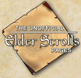
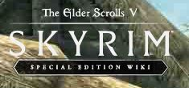
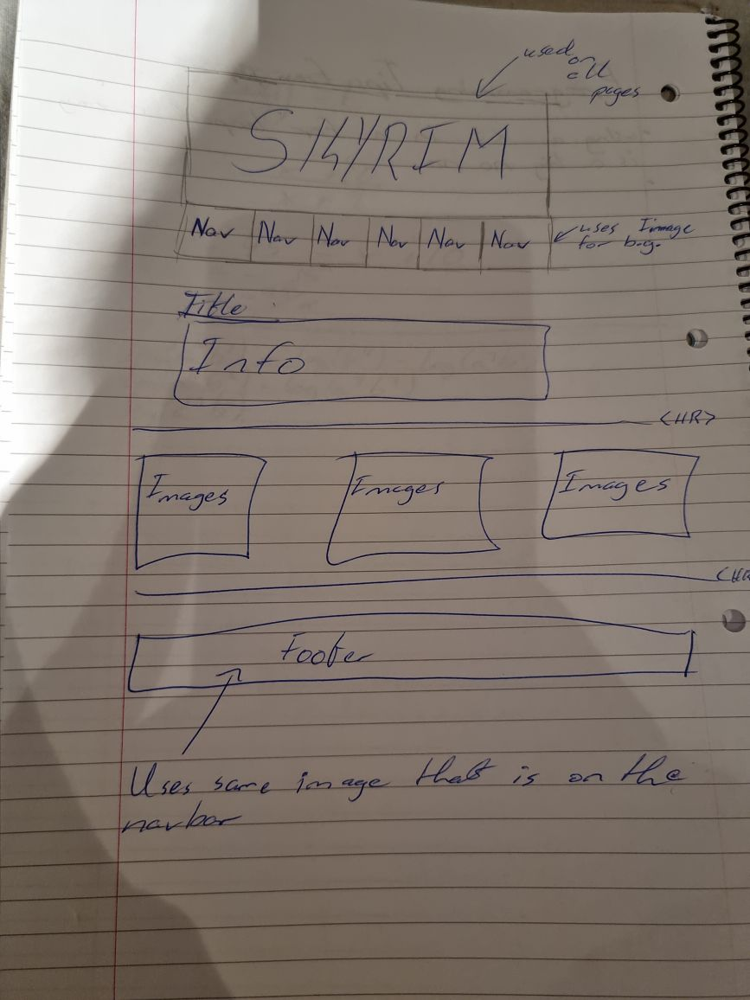
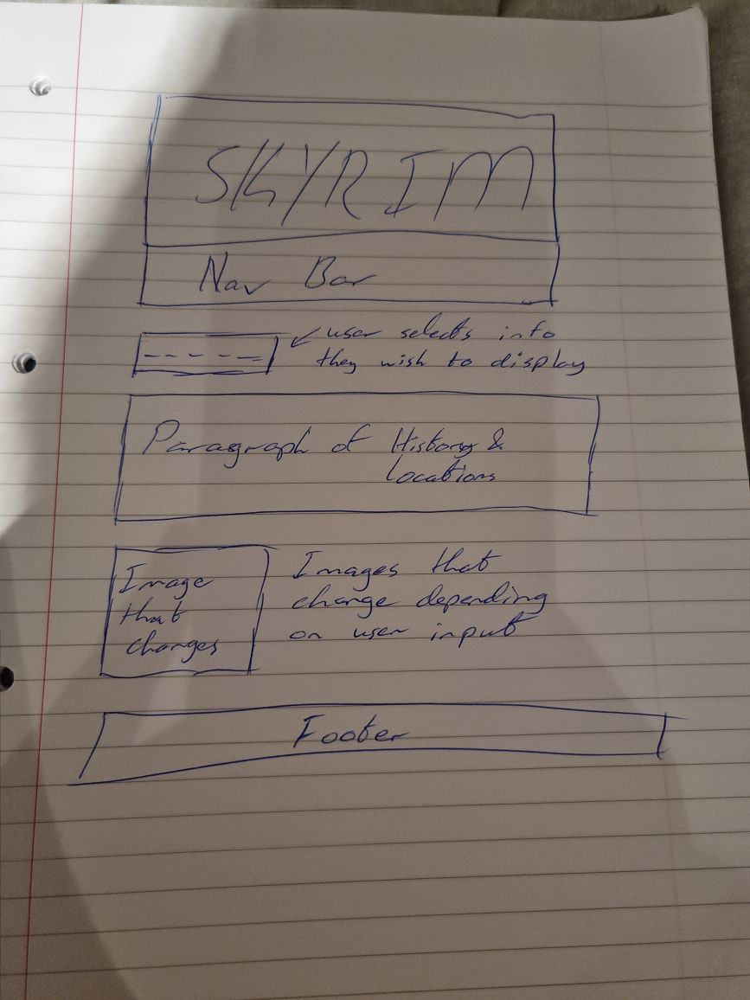
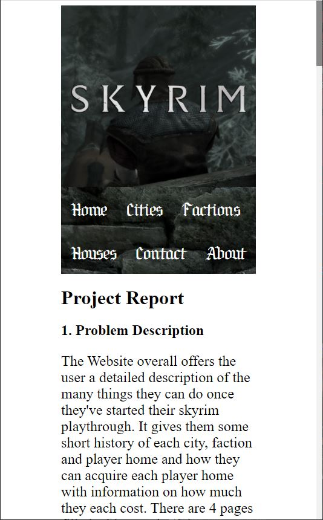
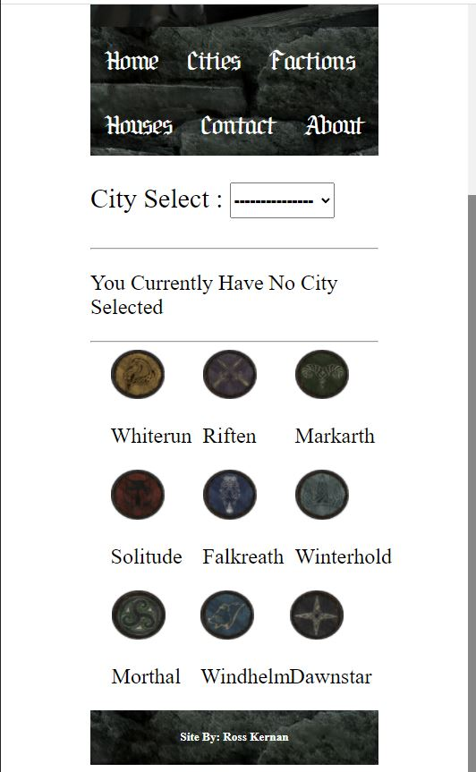
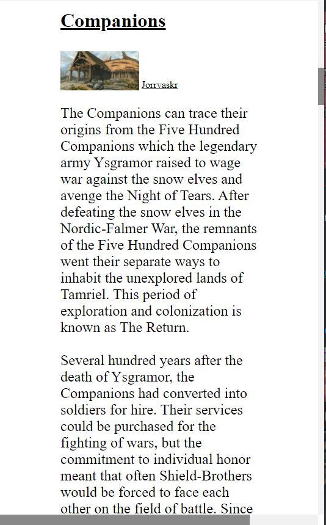

Project Report
1. Problem Description
The Website overall offers the user a detailed description of the many things they can do once they've started their skyrim playthrough. It gives them some short history of each city, faction and player home and how they can acquire each player home with information on how much they each cost. There are 4 pages filled with meaningful content that has been acquired from several respectable sources. On the factions page it shows the user each joinable faction the player can begin a questline with and also displays an image of where each faction is located with some history behind what the faction is. The home page shows the user some basic info required to know to fully indulge in the rest of the website and also allows the user to enjoy a picture of the game world with an added magnifying glass effect.
The target audience for this site is both beginner players who would like a quick and easy introduction to the world and also veteran players who are interested in certain aspects of the history of each part of the world of Skyrim, whether it be a faction or city.
The problem this site resolves is the issue alot of players come across when being introduced to the world overall, the problem of managing information that is introduced to the player throughout the game. The player must do this task on their own but with this site being able to be used as a guide the player can freely enjoy the game at their own pace and explore the named elements of Skyrim without having to deal with the issue of tracking information.
2. Research
The sites layout is very simple to understand due to being very minimalistic in nature, this is so as to give the user a sense of not being overwhelmed.
The Elder Scrolls Wiki LogoMany websites were used overall in the making of this website for informational purposes and layout inspiriation. But the 3 most prevelant would be 'The Elder Scrolls Wiki', 'The Unofficial Elder Scrolls Pages' and 'The Elder Scrolls V Skyrim Special Edition Wiki'. These were chosen specifically as theyve been highly regarded by many to hold the most trustworthy information whcih is relevant to this sites topics.
 The Unofficial Pages Logo  The Elder Scrolls V Wiki Logo3. Technology Selection and Site Architecture
External CSS and HTML5 were both used for this website
The user is expeceted to use the website on a pc due to Skyrim only being playable on this device. The website was designed with this idea in mind. Although other devices would be able to run the website, it would not be recommended due to some unintended bugs that are most likely to show up.
The website will work best on Chrome or Firefox, it is however compatible with opera and microsoft edge just not as 'clean' of a layout is applied to these browsers.
4. Javascript Functionality
There are three functions of javascript in this website
The first being displayed on the index of the website is a map of the city of skyrim, this image uses javascript to allow the user to hover over certain aspects of the image with their cursor to zoom in wherever the user sees fit.
The second function of the javascript is on the cities tab, where the user may select a skyrim city they wish to learn more information about. Selecting a city will change the text below this box to display accurate information to the user.
The final piece of javascript functionality used is simialar to the previously mentioned but is now being used on the Houses tab to show the user necessary information about whichever house in skyrim they have selected from the options given.
5. Low Fidelity Prototype
 Displayed images are back during early days of development where it shows the 2 different types of layout the website was hoping to achieve.
Upon reviewing the low fidelity prototypes and taking great care to find the definition of the word heuristics. The website as a whole was meant to be easy to use and not confuse the user too much and so was able to easily live up to expectations that were grounded within proper ideas that were easily executable.
6. Development Plan
The site was first created using a similar layout to the aforementioned websites mentioned in section 2 of the project report. It was started out using the basic idea of commenting on different aspects of the game that could all be displayed on different pages that would be very easy to name when used on the navbar.
The CSS Rules were a very tedious process in the creation of the website as in order to have them work perfectly seperate on their own respective pages the tags of each page needed to be very specific so as to not be accidentally used twice and overlap or mess with the other pages. To help prevent this, each page has been commented to make it more clear in the CSS file which CSS rules are being used for which pages depending on their class and ID tags.
7. Testing Plan
In order to make sure proper measures were put in order and minimal bug fixes would be necessary. The HTML and CSS validation services provided by W3C were used repetitively throughout the website creation process.
Overall the site is responsive to most browsers and devices. But the Index page does provide some issues as the images do not bode well to a change in size.
  8. Site Evaluation
Upon further review, the website overvall is a nice and short handy guide to leave open while playing the game the website is based upon or just to simply be used to read up on the lore of the elder scrolls series. All in all it serves a good function and helps the user to understand the world easier.
However, the sites interface was meant to be alot more professional looking as it was planned originally to use the side bars that are present on every page to display a different image on each. This was a harder task than expected as finding images to suit this need made the site either look very low quality and seemed out of place or just didnt work as intended. Also surveyed people online but never ended up using the poll as it couldnt be properly implemented anywhere.
9. Weekly Logs
Week 1: Completed lab example 1 wireframe. Figured out topic to use and researched topic for 30 minutes.
Week 2: Did more research on the topic at hand. (unable to access second logbook as it was done in the college labs)
Week 3: Finished majority of CSS and HTML file. Finalised all research info as well so everything that needs to go on the website is set in stone now.
Week 4: Started working on the javascript for project with good ideas, but pretty hard to execute properly. Also did an online poll with a sample size of 191 people for more accurate information
Week 5: Just adding more interesting ideas with little success, quite difficult to get them working properly. Also did small bit more research for more accurate info.